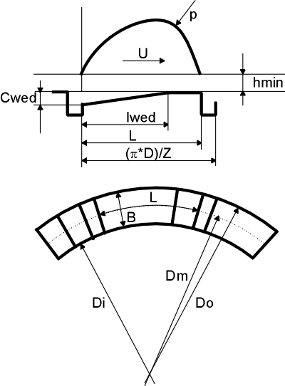
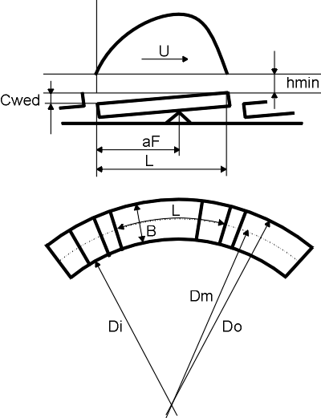

|
|
|


流体动压滑动推力轴承
DIN 标准根据类型提供了两种不同的方法来计算流体动压滑动推力轴承。
- 根据 DIN 31653 [73] 计算瓦块推力轴承：该标准适用于具有固定下凹润滑表面（参见图 30.1）的轴承，这些表面由润滑膜与旋转盘隔开。
- 根据 ISO 12130、DIN 31654 [74] 计算可倾瓦推力轴承：该标准适用于具有固定下凹润滑表面（参见图 30.2）的轴承，这些表面由润滑膜与旋转盘隔开。
如果不考虑压力中心对可倾瓦推力轴承的影响，则两个标准中所述的计算程序相同，因此此处只描述一次。不过，这两个标准的任何显著差异都将在此处特别说明。

图 30.1：按 DIN 31653 描述的瓦块推力轴承

图 30.2：按 ISO 12130、DIN 31654 的可倾瓦推力轴承
Hydrodynamic Plain Thrust Bearings
The DIN standard has two different methods for calculating hydrodynamic plain thrust bearings, according to type.
- Calculation of pad thrust bearings according to DIN 31653 [73]: This standard applies to bearings that have fixed sunken surfaces for lubrication (see Figure 30.1) which are separated from the rotating disks by a film of lubricant.
- Calculation of tilting-pad thrust bearings according to ISO 12130, DIN 31654 [74]: This standard applies to bearings that have fixed sunken surfaces for lubrication (see Figure 30.2) which are separated from the rotating disks by a film of lubricant.
If you do not consider the influence of the center of pressure on the tilting-pad thrust bearings, the same calculation procedure is described in both standards, which is why it is described here only once. However, any significant variations to these two standards will get a special mention here.
Figure 30.1: Pad thrust bearings as described in DIN 31653
Figure 30.2: Tilting-pad thrust bearings according to ISO 12130, DIN 31654